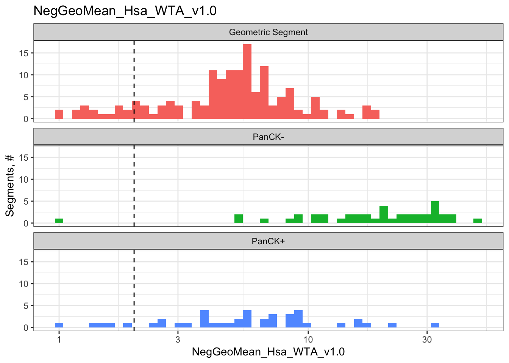
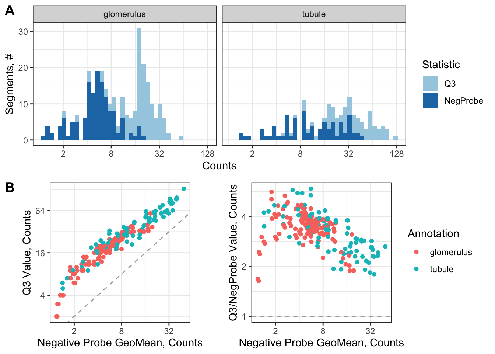
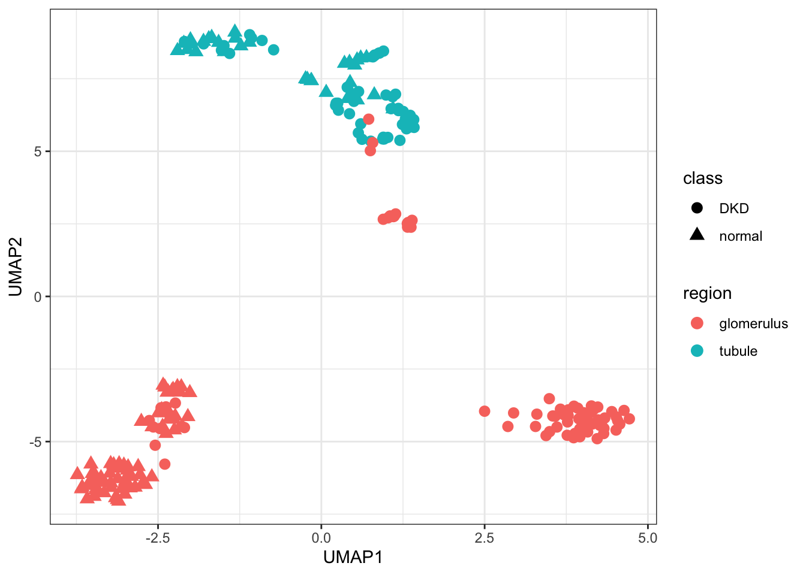
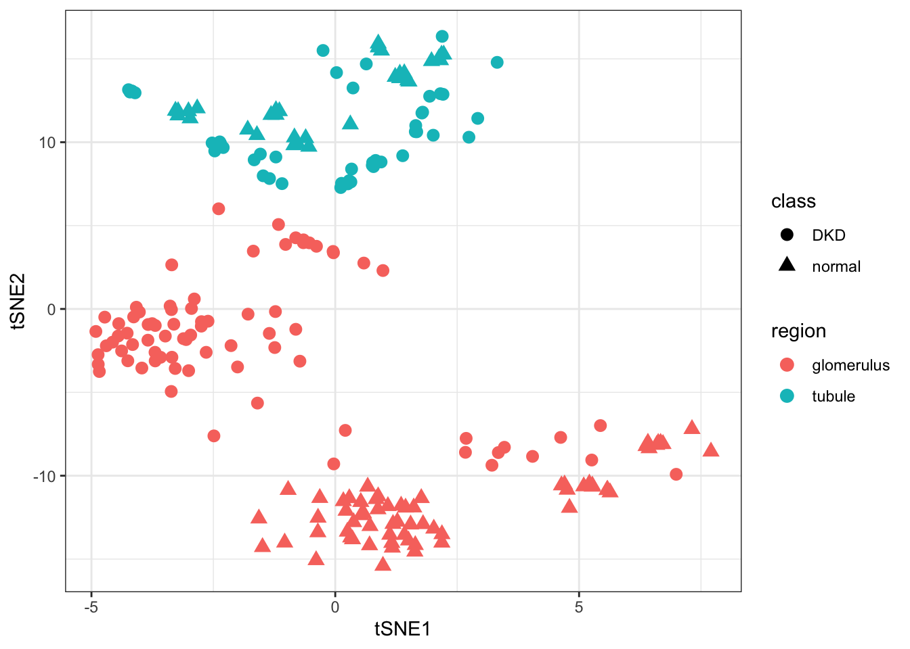
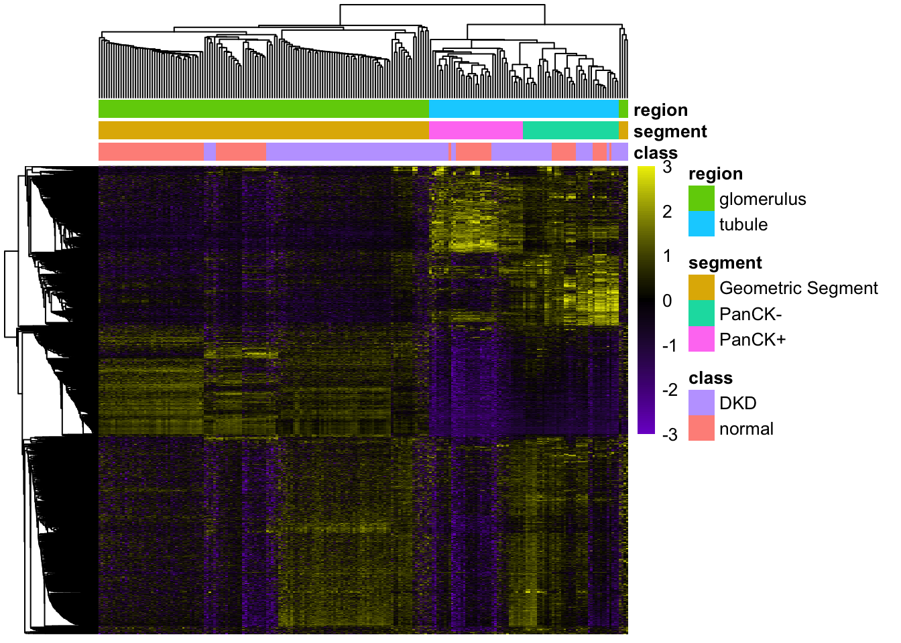

if (!require("BiocManager", quietly =TRUE))install.packages("BiocManager")# The following initializes most up to date version of BiocBiocManager::install("NanoStringNCTools")
Bioconductor version 3.16 (BiocManager 1.30.19), R 4.2.2 (2022-10-31)
Warning: package(s) not installed when version(s) same as or greater than current; use
`force = TRUE` to re-install: 'NanoStringNCTools'
Old packages: 'ggiraph'
BiocManager::install("GeomxTools")
Bioconductor version 3.16 (BiocManager 1.30.19), R 4.2.2 (2022-10-31)
Warning: package(s) not installed when version(s) same as or greater than current; use
`force = TRUE` to re-install: 'GeomxTools'
Old packages: 'ggiraph'
BiocManager::install("GeoMxWorkflows")
Bioconductor version 3.16 (BiocManager 1.30.19), R 4.2.2 (2022-10-31)
Warning: package(s) not installed when version(s) same as or greater than current; use
`force = TRUE` to re-install: 'GeoMxWorkflows'
Old packages: 'ggiraph'
library(NanoStringNCTools)
Loading required package: Biobase
Loading required package: BiocGenerics
Attaching package: 'BiocGenerics'
The following objects are masked from 'package:stats':
IQR, mad, sd, var, xtabs
Welcome to Bioconductor
Vignettes contain introductory material; view with
'browseVignettes()'. To cite Bioconductor, see
'citation("Biobase")', and for packages 'citation("pkgname")'.
Loading required package: S4Vectors
Loading required package: stats4
Attaching package: 'S4Vectors'
The following objects are masked from 'package:base':
expand.grid, I, unname
Loading required package: ggplot2
Attaching package: 'NanoStringNCTools'
The following object is masked from 'package:BiocManager':
version
library(GeomxTools)
Registered S3 method overwritten by 'GGally':
method from
+.gg ggplot2
library(GeoMxWorkflows)if(packageVersion("GeomxTools") <"2.1"&packageVersion("GeoMxWorkflows") >="1.0.1"){stop("GeomxTools and Workflow versions do not match. Please use the same version. This workflow is meant to be used with most current version of packages. If you are using an older version of Bioconductor please reinstall GeoMxWorkflows and use vignette(GeoMxWorkflows) instead")}if(packageVersion("GeomxTools") >"2.1"&packageVersion("GeoMxWorkflows") <="1.0.1"){stop("GeomxTools and Workflow versions do not match. Please use the same version, see install instructions above.")# to remove current package version# remove.packages("GeomxTools")# remove.packages("GeoMxWorkflows")# see install instructions above }
# calculate the negative geometric means for each modulenegativeGeoMeans <-esBy(negativeControlSubset(demoData), GROUP ="Module", FUN =function(x) { assayDataApply(x, MARGIN =2, FUN = ngeoMean, elt ="exprs") }) protocolData(demoData)[["NegGeoMean"]] <- negativeGeoMeans# explicitly copy the Negative geoMeans from sData to pDatanegCols <-paste0("NegGeoMean_", modules)pData(demoData)[, negCols] <-sData(demoData)[["NegGeoMean"]]for(ann in negCols) { plt <-QC_histogram(pData(demoData), ann, col_by, 2, scale_trans ="log10")print(plt)}

# detatch neg_geomean columns ahead of aggregateCounts callpData(demoData) <-pData(demoData)[, !colnames(pData(demoData)) %in% negCols]# show all NTC values, Freq = # of Segments with a given NTC count:kable(table(NTC_Count =sData(demoData)$NTC),col.names =c("NTC Count", "# of Segments"))
NTC Count
# of Segments
3
36
113
71
397
34
8704
94
kable(QC_Summary, caption ="QC Summary Table for each Segment")
QC Summary Table for each Segment
Pass
Warning
LowReads
231
4
LowTrimmed
235
0
LowStitched
235
0
LowAligned
229
6
LowSaturation
231
4
LowNegatives
235
0
HighNTC
235
0
LowNuclei
235
0
LowArea
235
0
TOTAL FLAGS
229
6
demoData <- demoData[, QCResults$QCStatus =="PASS"]# Subsetting our dataset has removed samples which did not pass QCdim(demoData)
Features Samples
18642 229
# Generally keep the qcCutoffs parameters unchanged. Set removeLocalOutliers to # FALSE if you do not want to remove local outliersdemoData <-setBioProbeQCFlags(demoData, qcCutoffs =list(minProbeRatio =0.1,percentFailGrubbs =20), removeLocalOutliers =TRUE)ProbeQCResults <-fData(demoData)[["QCFlags"]]# Define QC table for Probe QCqc_df <-data.frame(Passed =sum(rowSums(ProbeQCResults[, -1]) ==0),Global =sum(ProbeQCResults$GlobalGrubbsOutlier),Local =sum(rowSums(ProbeQCResults[, -2:-1]) >0&!ProbeQCResults$GlobalGrubbsOutlier))
#Subset object to exclude all that did not pass Ratio & Global testingProbeQCPassed <-subset(demoData, fData(demoData)[["QCFlags"]][,c("LowProbeRatio")] ==FALSE&fData(demoData)[["QCFlags"]][,c("GlobalGrubbsOutlier")] ==FALSE)dim(ProbeQCPassed)
Features Samples
18641 229
#> Features Samples #> 18641 229demoData <- ProbeQCPassed
# Check how many unique targets the object haslength(unique(featureData(demoData)[["TargetName"]]))
# Define LOQ SD threshold and minimum valuecutoff <-2minLOQ <-2# Calculate LOQ per module testedLOQ <-data.frame(row.names =colnames(target_demoData))for(module in modules) { vars <-paste0(c("NegGeoMean_", "NegGeoSD_"), module)if(all(vars[1:2] %in%colnames(pData(target_demoData)))) { LOQ[, module] <-pmax(minLOQ,pData(target_demoData)[, vars[1]] *pData(target_demoData)[, vars[2]] ^ cutoff) }}pData(target_demoData)$LOQ <- LOQ
LOQ_Mat <-c()for(module in modules) { ind <-fData(target_demoData)$Module == module Mat_i <-t(esApply(target_demoData[ind, ], MARGIN =1,FUN =function(x) { x > LOQ[, module] })) LOQ_Mat <-rbind(LOQ_Mat, Mat_i)}# ensure ordering since this is stored outside of the geomxSetLOQ_Mat <- LOQ_Mat[fData(target_demoData)$TargetName, ]
# Subset to target genes detected in at least 10% of the samples.# Also manually include the negative control probe, for downstream usenegativeProbefData <-subset(fData(target_demoData), CodeClass =="Negative")neg_probes <-unique(negativeProbefData$TargetName)target_demoData <- target_demoData[fData(target_demoData)$DetectionRate >=0.1|fData(target_demoData)$TargetName %in% neg_probes, ]dim(target_demoData)
Features Samples
10131 221
# retain only detected genes of interestgoi <- goi[goi %in%rownames(target_demoData)]
library(reshape2) # for meltlibrary(cowplot) # for plot_grid# Graph Q3 value vs negGeoMean of Negativesann_of_interest <-"region"Stat_data <-data.frame(row.names =colnames(exprs(target_demoData)),Segment =colnames(exprs(target_demoData)),Annotation =pData(target_demoData)[, ann_of_interest],Q3 =unlist(apply(exprs(target_demoData), 2, quantile, 0.75, na.rm =TRUE)),NegProbe =exprs(target_demoData)[neg_probes, ])Stat_data_m <-melt(Stat_data, measure.vars =c("Q3", "NegProbe"),variable.name ="Statistic", value.name ="Value")plt1 <-ggplot(Stat_data_m,aes(x = Value, fill = Statistic)) +geom_histogram(bins =40) +theme_bw() +scale_x_continuous(trans ="log2") +facet_wrap(~Annotation, nrow =1) +scale_fill_brewer(palette =3, type ="qual") +labs(x ="Counts", y ="Segments, #")plt2 <-ggplot(Stat_data,aes(x = NegProbe, y = Q3, color = Annotation)) +geom_abline(intercept =0, slope =1, lty ="dashed", color ="darkgray") +geom_point() +guides(color ="none") +theme_bw() +scale_x_continuous(trans ="log2") +scale_y_continuous(trans ="log2") +theme(aspect.ratio =1) +labs(x ="Negative Probe GeoMean, Counts", y ="Q3 Value, Counts")plt3 <-ggplot(Stat_data,aes(x = NegProbe, y = Q3 / NegProbe, color = Annotation)) +geom_hline(yintercept =1, lty ="dashed", color ="darkgray") +geom_point() +theme_bw() +scale_x_continuous(trans ="log2") +scale_y_continuous(trans ="log2") +theme(aspect.ratio =1) +labs(x ="Negative Probe GeoMean, Counts", y ="Q3/NegProbe Value, Counts")btm_row <-plot_grid(plt2, plt3, nrow =1, labels =c("B", ""),rel_widths =c(0.43,0.57))plot_grid(plt1, btm_row, ncol =1, labels =c("A", ""))

# Q3 norm (75th percentile) for WTA/CTA with or without custom spike-instarget_demoData <-normalize(target_demoData ,norm_method ="quant", desiredQuantile = .75,toElt ="q_norm")# Background normalization for WTA/CTA without custom spike-intarget_demoData <-normalize(target_demoData ,norm_method ="neg", fromElt ="exprs",toElt ="neg_norm")
library(umap)library(Rtsne)# update defaults for umap to contain a stable random_state (seed)custom_umap <- umap::umap.defaultscustom_umap$random_state <-42# run UMAPumap_out <-umap(t(log2(assayDataElement(target_demoData , elt ="q_norm"))), config = custom_umap)pData(target_demoData)[, c("UMAP1", "UMAP2")] <- umap_out$layout[, c(1,2)]ggplot(pData(target_demoData),aes(x = UMAP1, y = UMAP2, color = region, shape = class)) +geom_point(size =3) +theme_bw()

# run tSNEset.seed(42) # set the seed for tSNE as welltsne_out <-Rtsne(t(log2(assayDataElement(target_demoData , elt ="q_norm"))),perplexity =ncol(target_demoData)*.15)pData(target_demoData)[, c("tSNE1", "tSNE2")] <- tsne_out$Y[, c(1,2)]ggplot(pData(target_demoData),aes(x = tSNE1, y = tSNE2, color = region, shape = class)) +geom_point(size =3) +theme_bw()

library(pheatmap) # for pheatmap# create a log2 transform of the data for analysisassayDataElement(object = target_demoData, elt ="log_q") <-assayDataApply(target_demoData, 2, FUN = log, base =2, elt ="q_norm")# create CV functioncalc_CV <-function(x) {sd(x) /mean(x)}CV_dat <-assayDataApply(target_demoData,elt ="log_q", MARGIN =1, calc_CV)# show the highest CD genes and their CV valuessort(CV_dat, decreasing =TRUE)[1:5]
#> CAMK2N1 AKR1C1 AQP2 GDF15 REN #> 0.5886006 0.5114973 0.4607206 0.4196469 0.4193216# Identify genes in the top 3rd of the CV valuesGOI <-names(CV_dat)[CV_dat >quantile(CV_dat, 0.8)]pheatmap(assayDataElement(target_demoData[GOI, ], elt ="log_q"),scale ="row", show_rownames =FALSE, show_colnames =FALSE,border_color =NA,clustering_method ="average",clustering_distance_rows ="correlation",clustering_distance_cols ="correlation",breaks =seq(-3, 3, 0.05),color =colorRampPalette(c("purple3", "black", "yellow2"))(120),annotation_col =pData(target_demoData)[, c("class", "segment", "region")])

# convert test variables to factorspData(target_demoData)$testRegion <-factor(pData(target_demoData)$region, c("glomerulus", "tubule"))pData(target_demoData)[["slide"]] <-factor(pData(target_demoData)[["slide name"]])assayDataElement(object = target_demoData, elt ="log_q") <-assayDataApply(target_demoData, 2, FUN = log, base =2, elt ="q_norm")results <-c()for(status inc("DKD", "normal")) { ind <-pData(target_demoData)$class == status mixedOutmc <-mixedModelDE(target_demoData[, ind],elt ="log_q",modelFormula =~ testRegion + (1+ testRegion | slide),groupVar ="testRegion",nCores = parallel::detectCores(),multiCore =FALSE)# format results as data.frame r_test <-do.call(rbind, mixedOutmc["lsmeans", ]) tests <-rownames(r_test) r_test <-as.data.frame(r_test) r_test$Contrast <- tests r_test$Gene <-unlist(lapply(colnames(mixedOutmc), rep, nrow(mixedOutmc["lsmeans", ][[1]]))) r_test$Subset <- status r_test$FDR <-p.adjust(r_test$`Pr(>|t|)`, method ="fdr") r_test <- r_test[, c("Gene", "Subset", "Contrast", "Estimate", "Pr(>|t|)", "FDR")] results <-rbind(results, r_test)}
kable(subset(results, Gene %in% goi & Subset =="normal"), digits =3,caption ="DE results for Genes of Interest",align ="lc", row.names =FALSE)
DE results for Genes of Interest
Gene
Subset
Contrast
Estimate
Pr(>|t|)
FDR
KRT18
normal
glomerulus - tubule
-1.169
0.076
0.237
CD68
normal
glomerulus - tubule
-0.153
0.289
0.483
CD8A
normal
glomerulus - tubule
-0.227
0.147
0.332
NPHS1
normal
glomerulus - tubule
3.809
0.001
0.012
CALB1
normal
glomerulus - tubule
-2.014
0.027
0.138
CD274
normal
glomerulus - tubule
0.223
0.031
0.147
NPHS2
normal
glomerulus - tubule
5.430
0.002
0.025
CLDN8
normal
glomerulus - tubule
-1.961
0.001
0.011
EPCAM
normal
glomerulus - tubule
-2.297
0.000
0.006
# convert test variables to factorspData(target_demoData)$testClass <-factor(pData(target_demoData)$class, c("normal", "DKD"))# run LMM:# formula follows conventions defined by the lme4 packageresults2 <-c()for(region inc("glomerulus", "tubule")) { ind <-pData(target_demoData)$region == region mixedOutmc <-mixedModelDE(target_demoData[, ind],elt ="log_q",modelFormula =~ testClass + (1| slide),groupVar ="testClass",nCores = parallel::detectCores(),multiCore =FALSE)# format results as data.frame r_test <-do.call(rbind, mixedOutmc["lsmeans", ]) tests <-rownames(r_test) r_test <-as.data.frame(r_test) r_test$Contrast <- tests# use lapply in case you have multiple levels of your test factor to# correctly associate gene name with it's row in the results table r_test$Gene <-unlist(lapply(colnames(mixedOutmc), rep, nrow(mixedOutmc["lsmeans", ][[1]]))) r_test$Subset <- region r_test$FDR <-p.adjust(r_test$`Pr(>|t|)`, method ="fdr") r_test <- r_test[, c("Gene", "Subset", "Contrast", "Estimate", "Pr(>|t|)", "FDR")] results2 <-rbind(results2, r_test)}
kable(subset(results2, Gene %in% goi & Subset =="tubule"), digits =3,caption ="DE results for Genes of Interest",align ="lc", row.names =FALSE)
DE results for Genes of Interest
Gene
Subset
Contrast
Estimate
Pr(>|t|)
FDR
KRT18
tubule
normal - DKD
-0.096
0.748
0.997
CD68
tubule
normal - DKD
-0.726
0.124
0.965
CD8A
tubule
normal - DKD
-0.057
0.826
0.998
NPHS1
tubule
normal - DKD
-0.131
0.624
0.997
CALB1
tubule
normal - DKD
1.408
0.013
0.652
CD274
tubule
normal - DKD
-0.252
0.522
0.997
NPHS2
tubule
normal - DKD
-0.128
0.730
0.997
CLDN8
tubule
normal - DKD
0.979
0.000
0.058
EPCAM
tubule
normal - DKD
0.339
0.382
0.997
library(ggrepel) # Categorize Results based on P-value & FDR for plottingresults$Color <-"NS or FC < 0.5"results$Color[results$`Pr(>|t|)`<0.05] <-"P < 0.05"results$Color[results$FDR <0.05] <-"FDR < 0.05"results$Color[results$FDR <0.001] <-"FDR < 0.001"results$Color[abs(results$Estimate) <0.5] <-"NS or FC < 0.5"results$Color <-factor(results$Color,levels =c("NS or FC < 0.5", "P < 0.05","FDR < 0.05", "FDR < 0.001"))# pick top genes for either side of volcano to label# order genes for convenience:results$invert_P <- (-log10(results$`Pr(>|t|)`)) *sign(results$Estimate)top_g <-c()for(cond inc("DKD", "normal")) { ind <- results$Subset == cond top_g <-c(top_g, results[ind, 'Gene'][order(results[ind, 'invert_P'], decreasing =TRUE)[1:15]], results[ind, 'Gene'][order(results[ind, 'invert_P'], decreasing =FALSE)[1:15]])}top_g <-unique(top_g)results <- results[, -1*ncol(results)] # remove invert_P from matrix# Graph resultsggplot(results,aes(x = Estimate, y =-log10(`Pr(>|t|)`),color = Color, label = Gene)) +geom_vline(xintercept =c(0.5, -0.5), lty ="dashed") +geom_hline(yintercept =-log10(0.05), lty ="dashed") +geom_point() +labs(x ="Enriched in Tubules <- log2(FC) -> Enriched in Glomeruli",y ="Significance, -log10(P)",color ="Significance") +scale_color_manual(values =c(`FDR < 0.001`="dodgerblue",`FDR < 0.05`="lightblue",`P < 0.05`="orange2",`NS or FC < 0.5`="gray"),guide =guide_legend(override.aes =list(size =4))) +scale_y_continuous(expand =expansion(mult =c(0,0.05))) +geom_text_repel(data =subset(results, Gene %in% top_g & FDR <0.001),size =4, point.padding =0.15, color ="black",min.segment.length = .1, box.padding = .2, lwd =2,max.overlaps =50) +theme_bw(base_size =16) +theme(legend.position ="bottom") +facet_wrap(~Subset, scales ="free_y")
Warning: Duplicated aesthetics after name standardisation: size